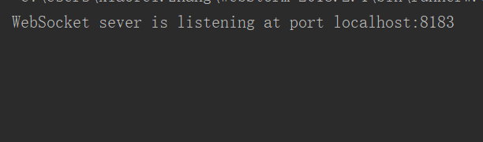
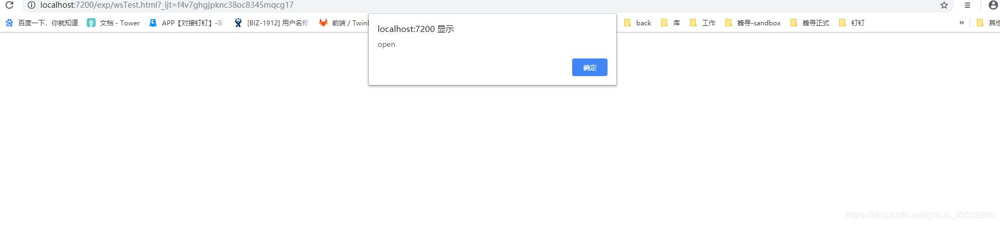
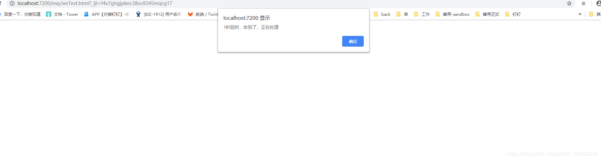
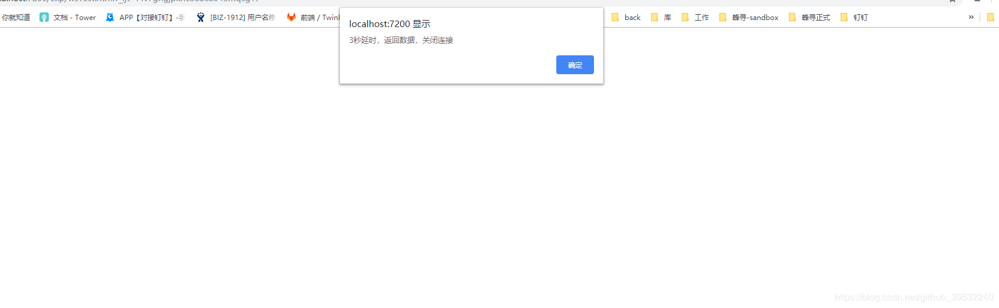
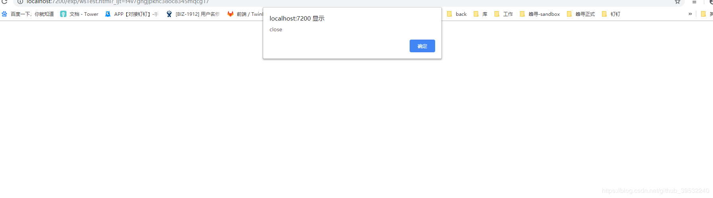
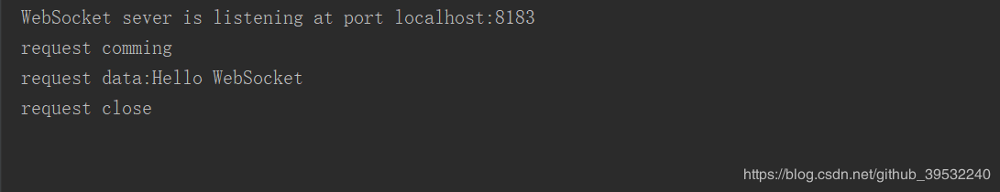

1、WebSocket是什么？
WebSocket是一种网络通信协议， 一种由HTML5 开始提供的、在单个 TCP 连接上进行全双工通讯的协议。它和HTTP协议的最大区别在于：HTTP 协议是一种无状态的、无连接的、单向的应用层协议当客户端想要知道服务端的变化时，HTTP协议必须使用“轮询”的方式，效率很低；而WebSocket只需一次连接，便可以让服务端直接向客户端推送信息，从而告别轮询。
下面来构建一个基于JS的WebSocket通信实例：
2、服务端
为与客户端一致，后端引入ws模块，构建服务器，监听对应事件，具体代码如下：
1 | var ws = require("ws"); // 加载ws模块; |
运行该js构建服务器,结果如下：

3、客户端
支持H5的浏览器均内置WebSocket 对象，直接引用即可，具体代码如下：
1 | <!DOCTYPE html> |
在浏览器中打开该页面，依次看到如下结果




此时，服务端控制台打印出的信息为：

至此，一个基于JS的WebSocket通信实例构建完毕。
更多关于WebSocket的知识点，可以点击查看这里。